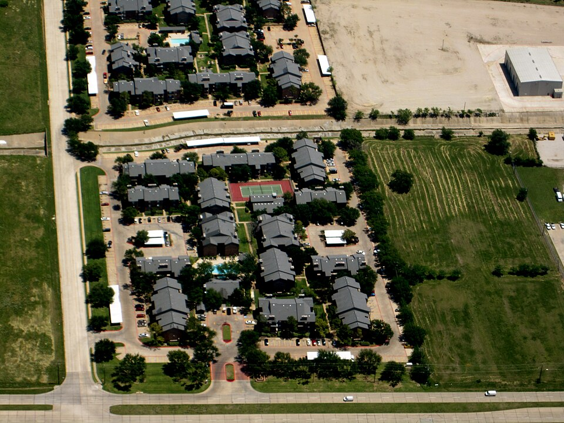
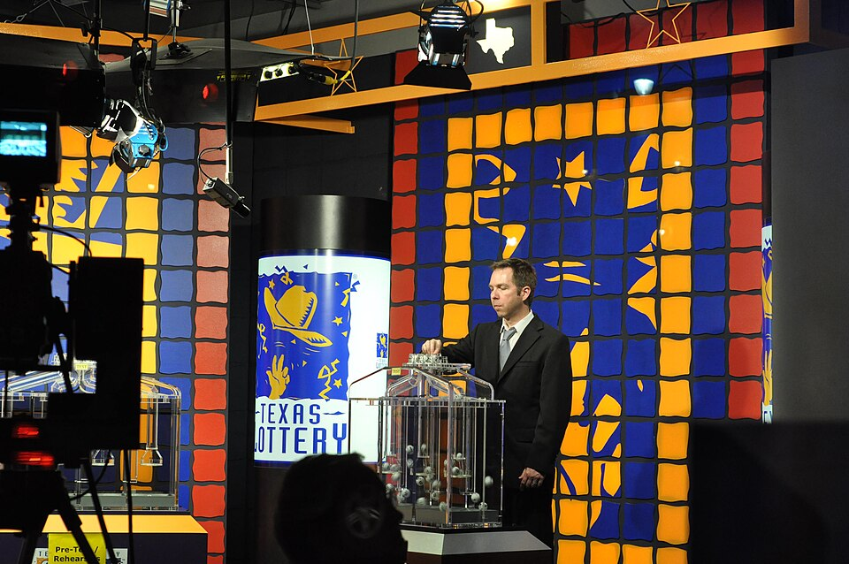

Explore how Texas raises revenue and spends taxpayer dollars!
Enter your name to begin your journey through Texas state financing:
Understand the basics of how Texas funds its government operations.
Learn about sales tax, severance taxes, federal funding, and more.
Discover where Texas spends its money and budget priorities.
Explore how the state budget is developed and approved.
Analyze ongoing challenges in Texas state finances.
In Texas, local governments, including school districts, cities, counties and special districts, are financed through ad valorem taxes, which multiply the appraised value of the property by a tax rate set by the governing body of the local government. As real estate values in Texas climbed after the oil bust of the 1980s, many homeowners became increasingly incensed at local government leaders proudly proclaiming that they hadn't raised taxes while presiding over huge increases in revenue provided by rising property tax appraisals.

+15 points! 📻 Property tax reform!
Conservative radio talk show host Dan Patrick was elected to the state senate in 2006, with outrage over property taxes his key issue. Senator Patrick helped pass a law creating a 10 percent cap on single-family residential property tax appraisal increases that could be realized by taxing authorities in any given year, allowing homeowners to "ramp up" to large sudden appraisal increases over time.
+15 points! 🔄 The failed tax swap!
For the 2019 legislative session, Texas Republicans vowed to curb property tax increases while recognizing the need to increase the state's share of school funding. One alternative: a "tax swap" that would raise Texas' 6.25% state sales tax rate by a penny, using that money to provide additional state funding for public education and to offset required reductions in school property tax rates.
Despite enthusiastic support from the "big three" – Governor Greg Abbott, Lieutenant Governor Dan Patrick, and House Speaker Dennis Bonnen – the proposal encountered stiff opposition from Republicans and Democrats across the political spectrum, and quietly disappeared from the legislature's agenda without a vote.
Texas is one of only seven states that do not levy a state income tax. The other 43 states collect an income tax ranging from 2% in Tennessee to more than 13% in California. Accordingly, Texas has to find other ways to pay for government services.
+15 points! 🛒 Sales tax explained!
The sales tax is the state's largest source of tax revenue. It is collected by local merchants and remitted to the state at 6.25 percent of the sales price of taxable goods. Local taxing jurisdictions (cities, counties, special-purpose districts, and transit authorities) may also impose sales and use tax up to 2 percent for a total maximum combined rate of 8.25 percent.
Exemptions include: groceries, property used in manufacturing, agricultural items, gas, electricity, and water. Still, sales taxes brought over $62 billion into the state treasury during the most recent two-year budget cycle.
+15 points! ⛽ Excise taxes revealed!
An excise tax is a sales tax on a specific product or service. Texas excise taxes include:
+15 points! 🏢 The franchise tax!
A business margins tax, still officially called a "franchise tax," brought in an estimated $3.8 billion. It's a complex tax that can be calculated four different ways, with businesses using whichever formula results in the lowest tax:
This flexibility was necessary when legislators abolished the old franchise tax in 2007 because a straight percentage of gross receipts would be much harder on a grocery store (high turnover, thin margins) than a jewelry store (few items, high markup).
The state government in Texas has budgeted to spend $251 billion over the 2020-21 biennial budget cycle, a significant increase over the $217 billion budget for the previous two-year cycle. Lawmakers agreed to increase spending by $11.1 billion on public education and to offset mandated local property tax cuts.
+15 points! 📈 Where the money goes!
Public education is the state's single largest spending category, followed closely by health and human services. While most of the health care portion is paid with federal funds, nearly every public education dollar must be raised locally through state taxes.
Key budget items include:
+15 points! 💰 Budget priorities!
An optimistic revenue forecast from State Comptroller Glen Hegar allowed legislators to spend 16% more than in the 2017 budget. Much of the additional spending went to Republican leadership's top priorities:
Historic note: Governor Greg Abbott approved the budget without a single line-item veto—the first time a Texas governor approved an entire state budget since Governor Allan Shivers signed a budget without changes in 1955.
The Texas Constitution has long required state government to operate on a two-year budget cycle. This has the advantage of forcing lawmakers and agencies to think ahead in a way that states with annual budgets do not.

+15 points! 📋 The drafting stage!
In the first stage, the LBB develops a draft budget based on detailed legislative appropriations requests (LAR) from each state agency. The process follows these steps:
+15 points! 🏛️ The legislative stage!
The second stage involves the legislative process:
Glenn Hegar was elected as the 36th Texas Comptroller of Public Accounts in November 2014. The Comptroller is Texas' chief financial officer — the state's treasurer, check writer, tax collector, procurement officer, and revenue estimator. The Comptroller's certification is required before any state budget can take effect.
Texas is a large, growing state with a long international border, susceptible to hurricanes and overly dependent on the fortunes of the oil and gas industry, even as concerns over climate change make the future of the fossil fuel industry uncertain. As today's college students become tomorrow's voters and elected officials, there are a number of nagging problems that will need to be faced.
+15 points! 🏠 Property tax challenges!
Texas continues to fund a lot of its public school obligations, as well as community colleges, with local property taxes. This system depends on the government assessing the value of every piece of real estate and capital equipment in its jurisdiction and deriving a fair value every year.
The problems:
+15 points! 🔮 Future challenges!
Health Care: Paid largely with federal funds, health care closely rivals education as the state's largest spending area. Texas' rejection of Medicare expansion during the Obama administration left counties, hospitals, insurance companies and service providers to pay for increasing indigent health care needs.
Gambling Revenue: Texas has chosen not to follow all of its bordering states in its rejection of casino gambling. While Texans gamble, they travel to Louisiana, Arkansas, New Mexico, and Oklahoma—or do so illegally—depriving Texas of potential revenue. Colorado has netted more than $1 billion annually from recreational marijuana.
Higher Education: As college replaces high school as the minimum education for many jobs, how will Texas accommodate increasing high school graduates and those who cannot afford rapidly rising tuition, fees, textbooks, and housing?
Texas legislators do many things, but the only thing they are constitutionally required to do each session is to adopt a budget. It is always the most important and most difficult task taken on by the legislature, although it is seldom the issue that generates the most constituent interest and media attention. More attention and scrutiny from ordinary Texans is the beginning of any long-term solution to the state's budget challenges.
Use your browser's "Save as PDF" option. Submit this PDF — screenshots will not be accepted.
Chapter 14: Financing State Government
| Section | Topic | Status | Points | Time |
|---|---|---|---|---|
| 1 | Introduction to State Financing | ❌ | 0/135 | --:-- |
| 2 | Texas Revenue Sources | ❌ | 0/200 | --:-- |
| 3 | State Government Spending | ❌ | 0/165 | --:-- |
| 4 | The Texas Budgeting Process | ❌ | 0/170 | --:-- |
| 5 | Issues in State Financing | ❌ | 0/160 | --:-- |
This report documents the student's completion of Chapter 14: Financing State Government. Time spent per section is tracked automatically—sections completed faster than expected will trigger a pacing alert.